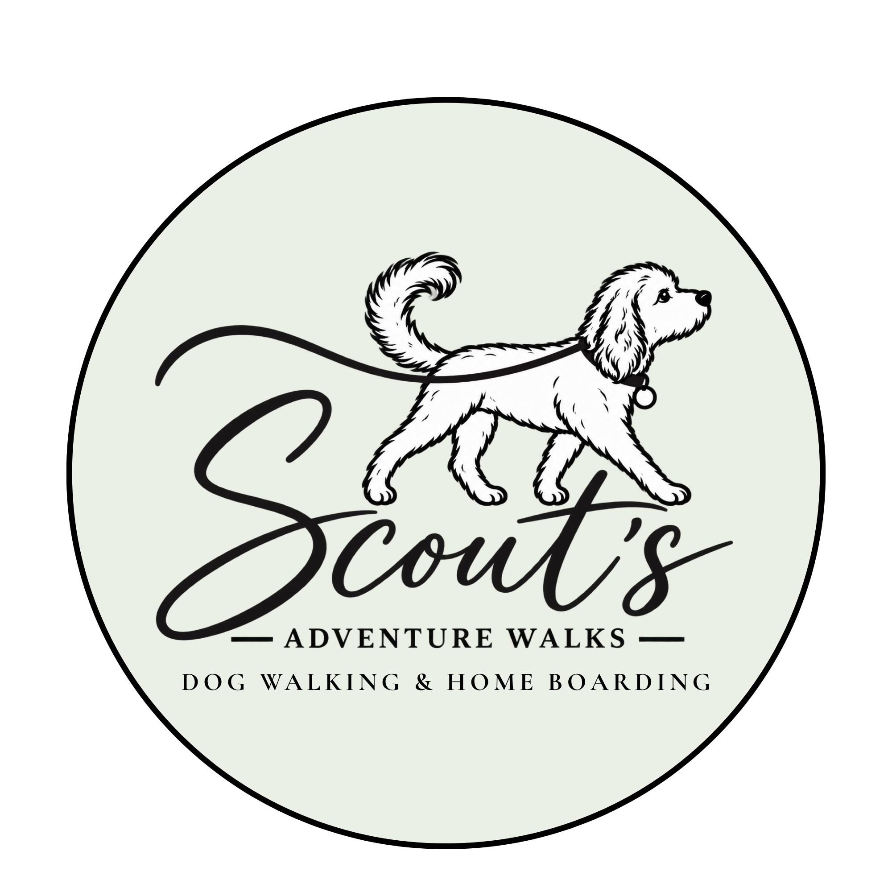
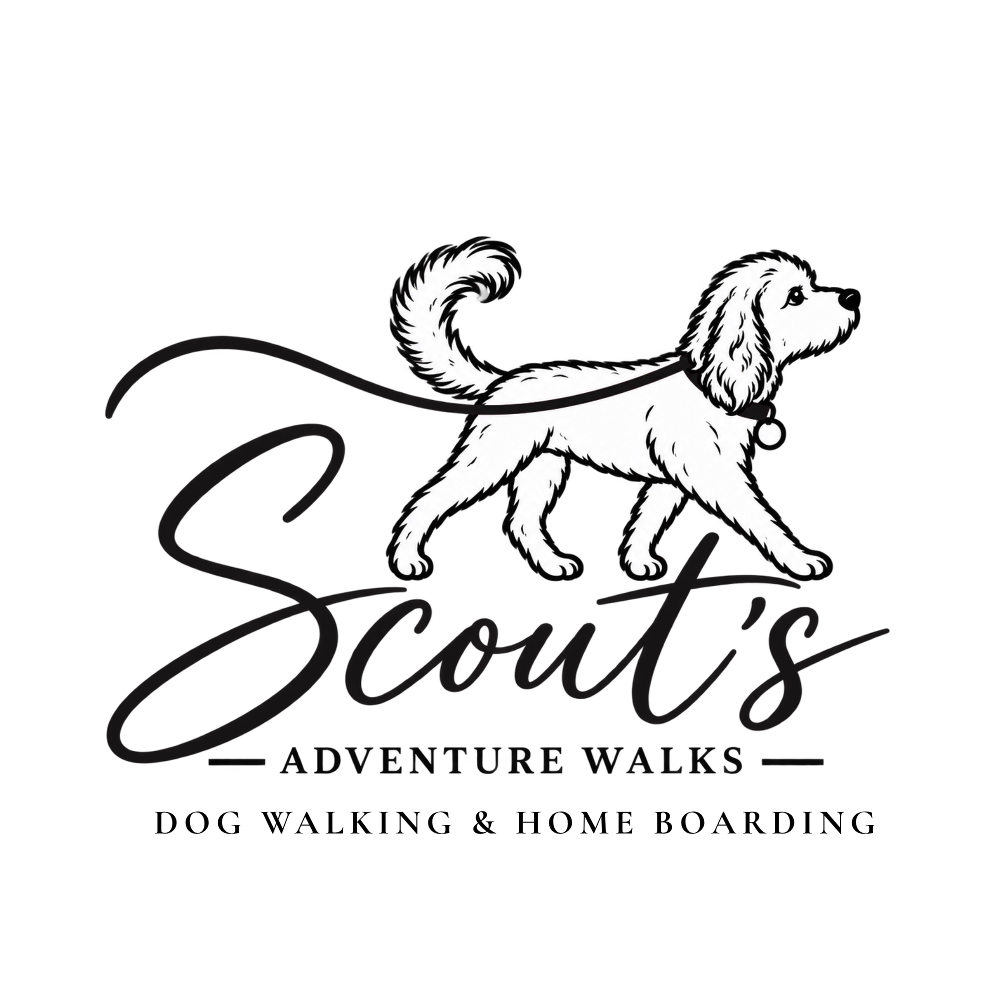

Logo design
A new logo for a start-up or a fresh look for an established business, created to suit your name, style and audience.
Whether you're starting a new business or refreshing your existing brand, I can help bring your ideas to life with a logo shaped around your business, style and vision.
Every project is different, so we can start with what you need and build from there.
We'll discuss what your business does, who your customers are and what you'd like your logo to communicate.
Share any preferred colours, styles, examples or inspiration you have. If you're unsure what you're looking for, we can explore ideas together.
We'll confirm the type of design you need, what's included and the agreed price before work begins.
Once we've explored the initial ideas, we'll share the proposed designs with you for feedback. You can let us know what you like, what you'd like changed and anything that doesn't feel quite right. We'll work through your feedback and make adjustments to the design, refining it together until we reach a logo that you're happy with and that suits your business.
Once you're happy with the final design, we'll confirm the agreed final files and any additional designs included in your project.
A look at branding and design work. Each project starts with the business it represents and the impression it wants to make.
In-house branding · Our own Exeter Tech Solutions branding, featuring a bold ETS wordmark and a blue-and-green colour scheme. The design brings the business’s visual identity together across the website and other business materials.
Business branding · A playful, eye-catching identity combining bright pink lettering, deep navy text and a pink-and-navy border, alongside colourful illustrations of the Swishers. The design reflects the business’s friendly personality and its focus on creating cleaner spaces and happier places.

Business branding · A rebranded circular logo featuring a hand-drawn dog illustration with realistic details and a soft sage green background. Designed to remain clear and recognisable in social media profile pictures.

A refreshed logo combining a hand-drawn dog illustration with elegant script and classic serif typography. The open layout is suited to website use, printed materials, stationery and wider business branding.
Tell me a little about your business and the designs you're looking for, and we'll take it from there.